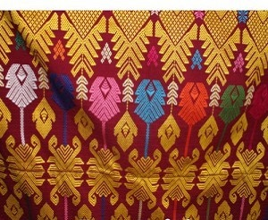

Kain Tenun Khas Lombok
Menenun merupakan pekerjaan penting bagi sebagian besar perempuan Lombok, selain kegiatan utama mereka sebagai petani. Ketika musim tanam dan panen, aktivitas menenun biasanya berhenti dan diganti dengan kegiatan turun ke sawah. Penghasilan yang bisa diperoleh dari bekerja di sawah mencapai Rp 25.000 per hari. Sementara pekerjaan menenum dalam sebulan hanya mendapat Rp 200.000 hingga Rp 500.000, karena rata-rata dalam sebulan seseorang hanya mampu menyelesaikan satu kain tenun saja.
Di pulau Lombok kegiatan menenun ini masih banyak menggunakan cara tradisional (klasik). Jadi alat tenun yang dipakai masih menggunakan bahan-bahan dari kayu, cara pengoperasiannya juga masih manual banget. Para penenun kain biasanya duduk di tanah beralaskan tikar/kain atau di sebuah balai-balai dengan kaki diselonjorkan lurus kedepan. Tujuannya untuk mempermudah mereka dalam proses menenun kain tersebut. Alasan utamanya mereka masih menggunakan cara-cara tradisional dalam menenun disamping untuk menjaga adat istiadat, budaya dan kearifan lokal, yang terpenting dari itu juga sebagai daya tarik wisata. Nyatanya teori tersebut memang benar-benar terbukt mampu menyedot animo wisatawan lokal maupun manca negara untuk datang dan berkunjung. Pembuatan kain tenun secara klasik atau tradisional ini diawali dengan mempersiapkan pembuatan benang, berikut pembuatan zat warnanya juga. Pembuatan benang secara tradisional menggunakan pemberat yang diputar-putar dengan jari-jari tangan. Sementara pemberatnya sendiri berbentuk seperti gasing yang terbuat dari kayu atau terakota. Untuk bahan membuat benang mengggunakan kapas, kulit kayu, serat pisang, serat nanas, daun palem dan lain sebagainya. Untuk pembuatan zat warnanya sendiri terdiri dari dua warna yaitu biru dan merah. Warna biru didapatkan dari indigo/Mirinda Citrifonela/mengkudu. Selain menggunakan mengkudu sebagai bahan pewarna, mereka juga menggunakan pewarna dari bahan tumbuhan lain seperti kesumba (sono keling). Kain tenun Lombok memang terbilang unik. Motif kain tenun yang dibuat biasanya sesuai dengan keinginan si penenun itu sendiri, saat melakukan proses penenunan kain tersebut. Pada umumnya motif mengikuti bentuk-bentuk geometris atau bentuk-bentuk objek lainnya, yang divariasikan juga dengan kreativitas masing-masing pengrajin kain tenun. Sebenarnya motif atau reragian terbentuk dari persilangan benang pakan dan benang lungsin. Benang pakan adalah benang yang arahnya vertikal atau mengikuti panjang kain tenun, sedangkan benang lungsin adalah benang yang fungsi arahnya horizontal atau mengikuti lebar kain tenun.
Aneka Motif Kain Tenun Lombok
Motif bintang remawe ini
memiliki ciri khas berupa corak kotak-kotak.Motif bintang remawe tercipta dengan menenun lunsi serta menggunakan pakan dengan warna berbeda. Di dalam kotak-kotak tersebut diberi hiasan motif kembang remawa mekar, biasanya dipadukan dengan motif kupu-kupu. Dalam keseharian kain tenun motif ini biasanya dikenakan oleh para gadis yang berada di Pulau Lombok.
Motif bulan bergantung ini
ciri khasnya adalah keberadaan bulan dilingkaran matahari, dihiasi dengan bintang-bintang dan biasanya divariasi dengan kembang. Sementara dibagian bawah diberikan variasi lambe dan pucuk rebung. Kain tenun dengan motif ini dikenakan oleh wanita atau pria di pulau Lombok pada acara/upacara adat.
Motif Keker menggambarkan kedamaian  dalam memadu kasih sambil bernaung di bawah pohon. Motif Keker merupakan motif klasik, digambarkan berupa hewan merak berhadap-hadapan yang bernaung di bawah pohon. Motif Keker ini mencerminkan kebahagiaan dan kedamaian dalam memadu kasih di bawah pohon. Motif keker menggunakan dasar benang katun dan berkembang menjadi benang sutra. Seiring dengan berjalannya waktu, motif keker berbahan benang emas atau perak. Penggunaan kain tenun dengan motif keker ini sebagai pakaian pesta.